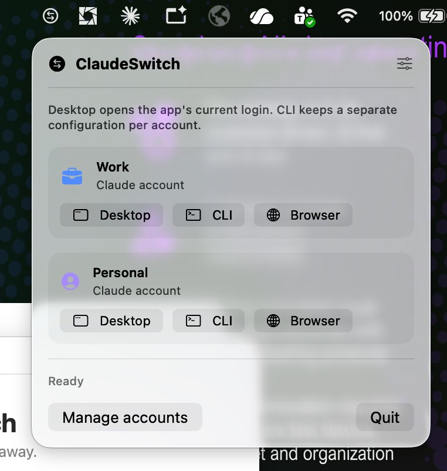
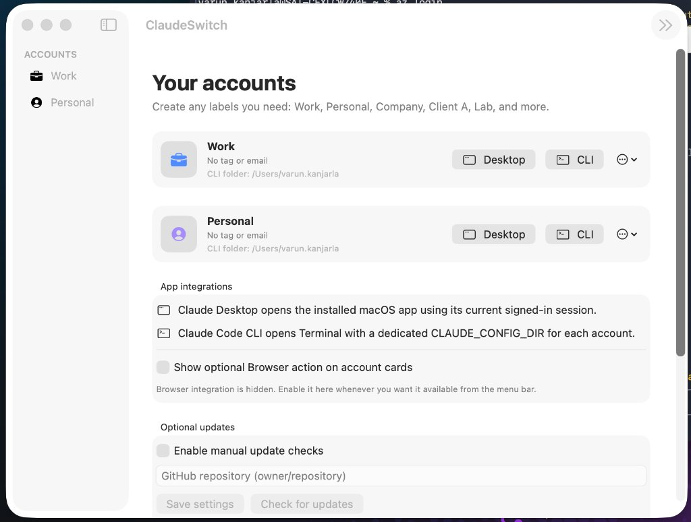
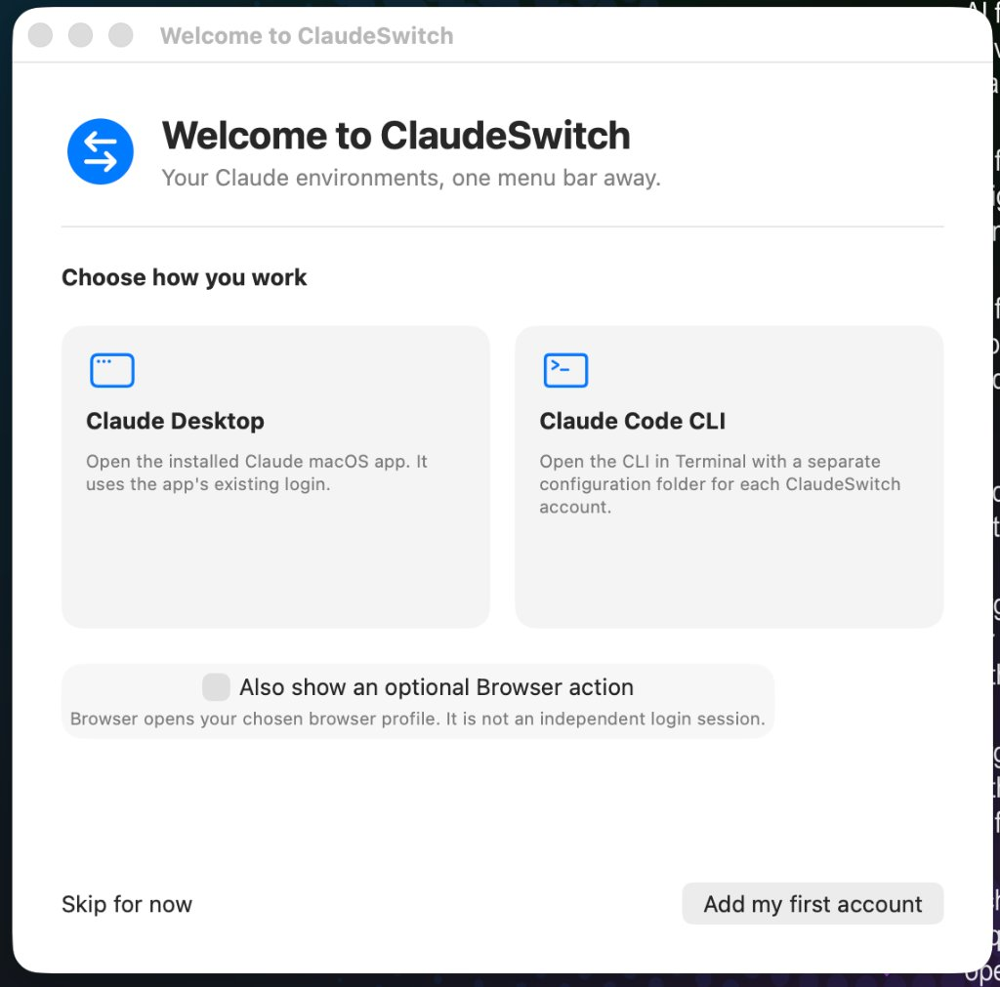

⌘
Per-Account Claude Code CLI
Launches Terminal with an isolated CLAUDE_CONFIG_DIR and your designated project folder. Never accidentally use the wrong credentials or context.
Keep work, personal, and client environments cleanly isolated. Launch Claude Desktop or Claude Code CLI with dedicated config directories and working folders—straight from your Mac menu bar.



Designed as a true native macOS citizen. Fast, lightweight, and right in your menu bar.
Access Work, Personal, and Client workspaces instantly from the menu bar. Launch Claude Desktop or Claude Code CLI in one tap.
Each profile receives an isolated CLAUDE_CONFIG_DIR and custom working folder so tokens and projects never bleed into each other.
No passwords or tokens are stored or inspected. ClaudeSwitch is a launch coordinator that keeps your workflow clean and organized.
A focused, native menu bar companion. No accounts to create, no cloud services, and zero telemetry.
Launches Terminal with an isolated CLAUDE_CONFIG_DIR and your designated project folder. Never accidentally use the wrong credentials or context.
Quickly brings the official Claude macOS desktop app to the foreground without hunting through the Dock or Mission Control.
Create unlimited environments for Work, Personal, Clients, Labs, or Teams with custom colors, avatars, and labels.
Configure default project paths per workspace so your CLI starts right in the repository where you need it.
ClaudeSwitch does not inspect, store, or transmit your Claude tokens, passwords, or cookies. All settings live locally on your Mac.
Install effortlessly with a single brew install command or drag-and-drop the native macOS DMG installer.
Choose your preferred installation method and start switching workspaces seamlessly.
Install via brew install --cask claudeswitch or download the DMG directly from GitHub Releases.
Open Settings to add your accounts, choose custom icons and colors, and pick working folders for each CLI profile.
Click the ClaudeSwitch icon in your macOS menu bar to launch Claude Desktop or Claude Code CLI with the exact context you need.
ClaudeSwitch is a small native utility designed with strict respect for your privacy. It manages metadata and launcher arguments locally and never intercepts authentication tokens or external sessions.
Read Security Policy ↗Clear answers on how ClaudeSwitch manages workspaces, launches tools, and handles security.
ClaudeSwitch sets an independent CLAUDE_CONFIG_DIR environment variable for each account profile and launches Terminal directly in that workspace's designated project folder. This ensures tokens, configurations, and project contexts for your company, personal, and client accounts never mix.
ClaudeSwitch activates the installed official Claude macOS desktop application via macOS Launch Services with a single click. Note that Claude Desktop retains its single active signed-in session across macOS.
Run brew tap varunkkanjarla/tap && brew install --cask claudeswitch in your Terminal. You can update anytime with brew upgrade claudeswitch.
Because ClaudeSwitch is an open-source community release distributed outside the Mac App Store, macOS Gatekeeper may show a notice on first launch. Right-click (or Control-click) ClaudeSwitch.app in your Applications folder and select Open, or run xattr -cr /Applications/ClaudeSwitch.app in Terminal.
You can optionally enable a Browser button in Settings to open claude.ai in your chosen browser (Chrome, Safari, Brave, Edge, etc.) directly from your menu bar. It opens your browser's existing profile.
All settings and profile definitions are stored strictly locally in standard macOS application support directories: ~/Library/Application Support/ClaudeSwitch/.